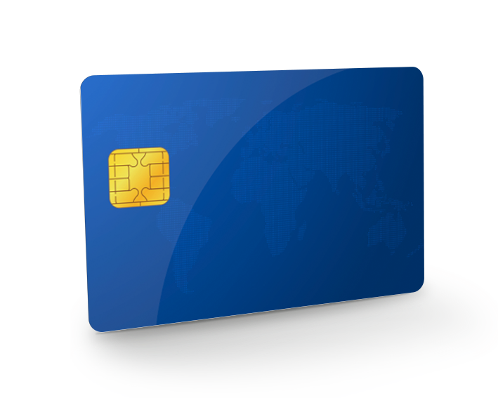

¿Qué es el fraude digital bancario?
El fraude digital bancario ocurre cuando una persona intenta engañar a otra para obtener acceso a su información financiera, cuentas, tarjetas, contraseñas o códigos de seguridad. Muchas veces estos fraudes llegan por mensajes de texto, correos electrónicos, llamadas telefónicas o aplicaciones de pago.
Una de las áreas que más cuidado requiere es el uso de aplicaciones como ATH Móvil, Zelle etc. ya que muchas personas las utilizan para enviar y recibir dinero de forma rápida. Por eso es importante verificar bien antes de enviar dinero, contestar mensajes o compartir información personal.
Tipos de fraude más comunes
Fraude por ATH Móvil
Este fraude puede ocurrir cuando alguien te pide devolver dinero por un supuesto error, confirmar una transacción o enviar un pago rápidamente. Si la persona te presiona, lo mejor es verificar primero con calma.

Phishing bancario
El phishing ocurre cuando recibes un correo o mensaje que aparenta ser de tu banco. Normalmente incluye un enlace falso para robar contraseñas, códigos o información personal.
Smishing
El smishing es parecido al phishing, pero ocurre por mensajes de texto. Puede decir que tu cuenta fue bloqueada, que tienes una transacción pendiente o que debes verificar tus datos.

Fraude con tarjetas
Este fraude puede incluir cargos no reconocidos, compras no autorizadas o uso indebido de una tarjeta. Por eso es importante revisar los movimientos de la cuenta con frecuencia.
Ejemplos de situaciones sospechosas
Cómo proteger tus cuentas bancarias
Para proteger tus cuentas, es importante evitar links sospechosos, usar contraseñas seguras y activar el 2fa cuando esté disponible. También conviene revisar tus cuentas con frecuencia para identificar transacciones o movimientos que no reconozcas.
- No compartas contraseñas ni códigos de seguridad.
- Entra al banco escribiendo la dirección oficial en el browser.
- Activa alertas de transacciones en tu cuenta.
- Usa contraseñas diferentes para cada servicio.
- Evita usar redes Wi-Fi públicas para entrar a cuentas bancarias.
- Verifica bien antes de enviar dinero por ATH Móvil o cualquier aplicación.
Qué hacer si crees que fuiste víctima
Si crees que compartiste información en una página falsa o respondiste a un mensaje sospechoso, debes actuar lo antes posible. Primero, comunícate con tu banco usando un canal oficial. Luego, cambia tus contraseñas y revisa si existen cargos, retiros o movimientos que no reconoces.
Si la situación incluye robo de identidad, pérdida de dinero o uso indebido de información personal, guarda evidencia del mensaje, la fecha, capturas de pantalla y cualquier comunicación relacionada. Tener esa información organizada puede ayudarte al momento de presentar una reclamación.
Lista rápida antes de reportar
Antes de presentar un reporte, es recomendable organizar la información para explicar mejor lo sucedido.
- Fecha y hora del mensaje sospechoso.
- printscreen del email, texto o llamada recibida.
- link sospechoso, si aplica.
- Nombre de la institución o aplicación que fue imitada.
- Información que compartiste, si compartiste alguna.
- Cargos, pagos o transacciones no reconocidas.
- Número de reclamación del banco, si ya reportaste el caso.